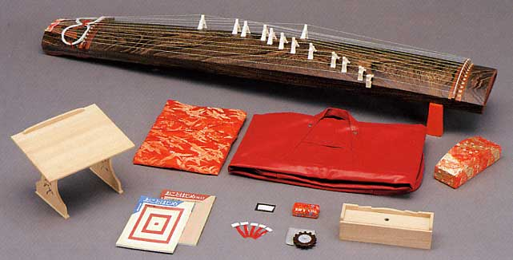

琴とは
琴は日本の伝統的な弦楽器で、美しい木の響きと繊細な旋律が特徴です。13本の弦を持ち、指に「爪（つめ）」をつけて演奏します。

琴の由来
琴の起源は中国の古代楽器にさかのぼり、そこから日本へ伝わりました。中国では「琴」は広く弦楽器の総称でしたが、日本で独自の発展を遂げ、雅楽や邦楽の中心的な楽器として愛されてきました。
琴の形の由来
琴の独特な形は、音の響きを最大限に引き出すために考えられました。平らな胴体と弦の配置は、繊細な表現を可能にします。
また、その形状は日本の美意識や「和」の心を映し出しており、シンプルで機能的かつ優雅な姿をしています。
琴の歴史
奈良時代に中国から伝わり、平安時代には宮廷音楽で重要な役割を果たしました。江戸時代には庶民にも広まり、多くの名曲が生まれました。
最近の琴
現代では、カーボン素材や電気的に音を出力する琴も登場し、音楽のジャンルも広がっています。
若者や海外でも注目され、ポップスや映画音楽とのコラボも行われています。
琴の演奏に使う道具
- 爪（つめ）: 指に装着し弦を弾くためのピック。
- 柱（じ）: 弦の音程を調整する駒。
- 琴台: 琴を安定して置くための台。
- 調子笛: 調弦時に基準音を確認する笛。
- 譜面台: 楽譜を置く台。
琴を弾くことの良さ
- 心を落ち着ける: 音色が心を癒やし、リラックス効果をもたらします。
- 感性を育む: 美しい旋律に触れることで音楽的な感受性が高まります。
- 集中力が向上: 丁寧な演奏を通じて集中力が身につきます。
- 文化理解が深まる: 日本の歴史や伝統に触れ、理解を深めることができます。
- 手指の運動: 指先を使うことで脳や身体への良い刺激になります。